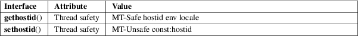

gethostid, sethostid − get or set the unique identifier of the current host
Standard C library (libc, −lc)
#include <unistd.h>
long
gethostid(void);
int sethostid(long hostid);
Feature Test Macro Requirements for glibc (see feature_test_macros(7)):
gethostid():
Since glibc 2.20:
_DEFAULT_SOURCE || _XOPEN_SOURCE >= 500
Up to and including glibc 2.19:
_BSD_SOURCE || _XOPEN_SOURCE >= 500
sethostid():
Since glibc 2.21:
_DEFAULT_SOURCE
In glibc 2.19 and 2.20:
_DEFAULT_SOURCE || (_XOPEN_SOURCE && _XOPEN_SOURCE
< 500)
Up to and including glibc 2.19:
_BSD_SOURCE || (_XOPEN_SOURCE && _XOPEN_SOURCE <
500)
gethostid() and sethostid() respectively get or set a unique 32-bit identifier for the current machine. The 32-bit identifier was intended to be unique among all UNIX systems in existence. This normally resembles the Internet address for the local machine, as returned by gethostbyname(3), and thus usually never needs to be set.
The sethostid() call is restricted to the superuser.
gethostid() returns the 32-bit identifier for the current host as set by sethostid().
On success, sethostid() returns 0; on error, −1 is returned, and errno is set to indicate the error.
sethostid() can fail with the following errors:
|
EACCES |
The caller did not have permission to write to the file used to store the host ID. | ||
|
EPERM |
The calling process’s effective user or group ID is not the same as its corresponding real ID. |
For an explanation of the terms used in this section, see attributes(7).

In the glibc implementation, the hostid is stored in the file /etc/hostid. (Before glibc 2.2, the file /var/adm/hostid was used.)
In the glibc implementation, if gethostid() cannot open the file containing the host ID, then it obtains the hostname using gethostname(2), passes that hostname to gethostbyname_r(3) in order to obtain the host’s IPv4 address, and returns a value obtained by bit-twiddling the IPv4 address. (This value may not be unique.)
gethostid()
POSIX.1-2008.
sethostid()
None.
4.2BSD; dropped in 4.4BSD. SVr4 and POSIX.1-2001 include gethostid() but not sethostid().
It is impossible to ensure that the identifier is globally unique.
hostid(1), gethostbyname(3)